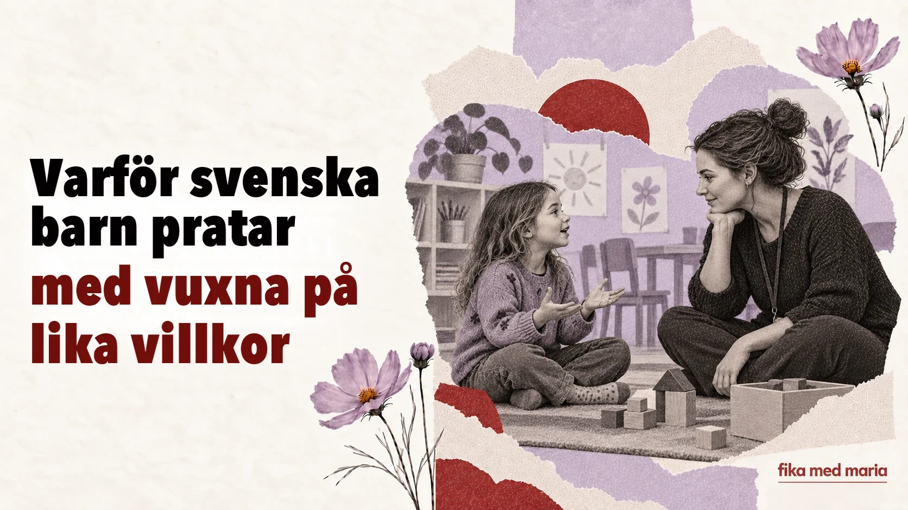

Varför svenska barn pratar med vuxna på lika villkor

Barnet kallar förskolläraren vid förnamn. Säger emot en vuxen. Frågar varför det måste göra något. Vid första anblicken kan det se ut som brist på distans eller till och med på respekt.
Men i ett svenskt sammanhang betyder en jämlik ton inte att man har samma ansvar. En vuxen är fortfarande en vuxen – auktoriteten behöver bara inte markeras med formellt tilltal och order.
Du-tilltalet tar inte bort gränserna
Svenska barn säger du till förskollärare, lärare och de flesta andra vuxna och kallar dem ofta vid förnamn. Avsaknaden av ett särskilt, formellt ”ni” minskar det språkliga avståndet, men rollerna suddas inte ut.
En lärare kan tala med värme och samtidigt sätta en tydlig gräns:
Jag hör att du är arg, men du får inte slå.
Ungefär: jag märker att du är arg, men att slå är inte tillåtet.
I meningen finns både ett erkännande av känslan och en regel. Att förstå känslor betyder inte att man tillåter vilket beteende som helst.
Man förklarar ”varför” för barnet
I stället för ett kort ”för att jag sa det” får barnet ofta höra en förklaring av konsekvensen:
Vi behöver gå nu för att hinna till förskolan i tid.
Ungefär: vi måste ge oss av nu, annars kommer vi för sent till förskolan.
Du behöver ha hjälm för att skydda huvudet.
Ungefär: hjälmen är till för att skydda huvudet.
Att man förklarar betyder inte att varje regel går till omröstning. Det hjälper barnet att se logiken och inte bara den vuxnas makt.
Val inom bestämda gränser
Barnet kan få välja, men det är den vuxna som sätter ramarna:
Vill du ta på dig den röda eller den blå tröjan?
Ungefär: du får välja mellan två tröjor.
Alternativet ”att inte klä på sig alls” finns inte här. Det handlar inte om att ge upp ledarskapet, utan om att ge barnet inflytande där det är säkert.
Inte ”du är dum”, utan ”så får man inte göra”
I samtal är det viktigt att skilja personen från handlingen:
Det var inte okej att ta leksaken från henne.
Ungefär: det är handlingen som är fel, inte barnet.
Det är något annat än omdömet Du är dum, som kan betyda både ”du är stygg” och ”du är korkad”. Den första meningen pekar ut ett beteende som kan ändras. Den andra sätter en stämpel på själva barnet.
Även barnets nej behöver höras
Om barnet säger nej kan den vuxna ta reda på orsaken:
Jag hör att du inte vill. Kan du berätta varför?
Ungefär: jag tar dig på allvar och vill veta varför.
Det är inget löfte om att ge med sig. Efter svaret kan den vuxna säga:
Jag förstår, men vi behöver ändå gå till läkaren.
Ungefär: jag förstår dig, men beslutet ändras inte – vi går till läkaren.
Barnet får rätt till sina känslor och sin röst, men inte ansvaret för ett beslut som barnet är för ungt för att fatta.
Fraser som föräldrar kan få höra på förskolan
Hur har lämningen fungerat?
Ungefär: hur gick det när barnet lämnades på morgonen?
Han har varit delaktig i leken.
Ungefär: han har deltagit aktivt i leken.
Hon behöver stöd i övergångarna.
Ungefär: hon behöver hjälp när dagen går från en aktivitet till en annan.
Vi vill gärna följa upp det här.
Ungefär: vi vill ta upp frågan igen senare och se hur det utvecklar sig.
Den sista frasen betyder inte nödvändigtvis att det finns ett allvarligt problem. Men det är en signal om att personalen vill fortsätta observera eller prata vidare.
Så ställer du en fråga om du inte håller med
I stället för att tiga eller genast försvara dig kan du säga:
- Kan du ge ett konkret exempel? – Ungefär: kan du beskriva en situation där det hände?
- Hur brukar ni hantera sådana situationer? – Ungefär: hur brukar ni gå tillväga när sådant uppstår?
- Vad kan vi göra hemma? – Ungefär: hur kan vi hjälpa till på hemmaplan?
- När följer vi upp det här? – Ungefär: när pratar vi om det här igen?
På så sätt blir samtalet ett gemensamt sökande efter en lösning.
Barnet vill inte sluta leka, men det är dags att gå. Formulera en mening i tre delar: erkänn känslan, sätt en gräns och ge ett litet val.
Till exempel:
Jag förstår att du vill leka mer, men vi behöver gå nu. Vill du ta med bilen eller nallen?
Fika med Maria tar fram praktiskt material för samtal med förskolan, skolan, vårdpersonal och andra föräldrar. Fusklapp för mammor.
Får svenska barn göra vad de vill?
Nej. Idén om barnets delaktighet betyder inte att det saknas regler. Gränserna formuleras ofta lugnt, och skälet till dem förklaras.
Vad betyder delaktig?
Involverad – någon som deltar och har möjlighet att påverka utifrån situationen.